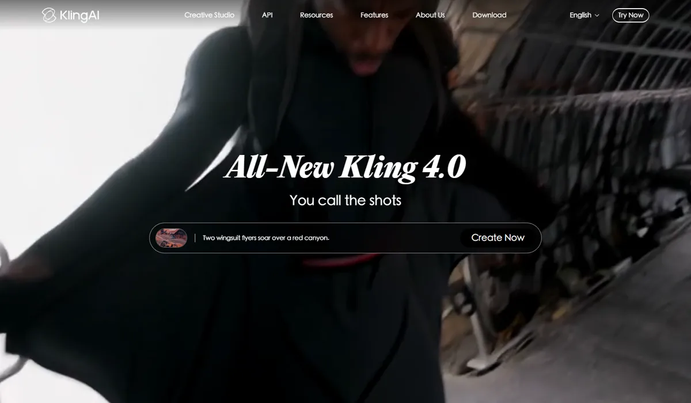
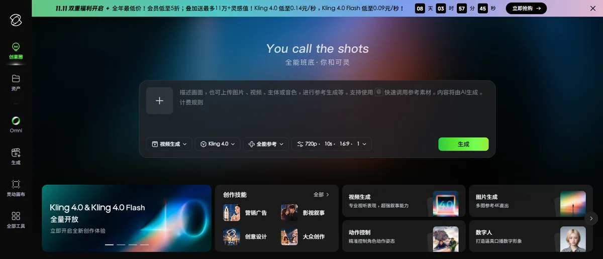

快手可灵快手科技 · 可灵 AI
可灵是全球少数单独披露收入、而且已经形成规模的视频生成业务：2026 年二季度收入超过 8.5 亿元、同比增长 200% 以上，全球用户过亿、企业客户近 5 万家，并以 180 亿美元估值完成融资、筹备分拆。模型从拼画质转向拼控制，可灵 4.0 单次生成 30 秒；但在第三方盲测中，3.0 系列已落后字节、阿里和 MiniMax。
一页结论
- 收入增长快，但在快手里占比小：二季度收入超过 8.5 亿元、同比增长 200% 以上，一季度约 6.5 亿元；但只占快手总收入约 2.4%S1S5S6
- 全球化与企业化：全球用户突破 1 亿、覆盖 224 个国家和地区，企业客户近 5 万家；用可灵制作的广告在 2026 年戛纳国际创意节获一银两铜S1S2
- 从画质转向控制：可灵 4.0（10 月 15 日）单次生成 30 秒、最多 10 个关键帧、15 份参考素材；官方称“逼真度正在成为基础能力”S7
- 第三方排名下滑：Kling 3.0 Omni 在文生视频盲测榜排第 18，落后字节 Seedance、阿里 Wan、MiniMax 和 Google Omni；清华大学的推理基准中人工评分也低于 Seedance 2.0S4S8
- 资本化提速：7 月完成近 30 亿美元融资，腾讯参投，投后估值约 180 亿美元；快手计划未来 12 个月内启动可灵赴港上市S2S3
01公司介绍
02公司战略
可灵的主线是“独立变现、走向全球、服务专业创作”：先用视频生成单独跑出收入，再分拆融资，从个人创作者扩展到广告、影视等专业客户。
03定位与竞争
一句话定位：为全球的个人创作者、广告营销团队和影视创作者，在短视频、广告和叙事内容场景中，提供可控的视频生成，并作为独立品牌单独变现的视频生成平台。
| 目标用户 | 主要入口 | 依据 |
|---|---|---|
| 个人创作者 | 可灵 App 与网页 | 全球用户 1 亿，覆盖 224 个国家和地区S2 |
| 企业与广告团队 | 可灵企业服务、API | 企业客户近 5 万家；可灵制作的广告获戛纳银狮、铜狮S1S2 |
| 影视与叙事创作者 | 可灵 4.0 关键帧、分镜功能 | 单次 30 秒、10 个关键帧，面向连续叙事S7 |
| AI Agent 开发者 | Kling MCP、Kling CLI、API | 让 Agent 批量生成内容S1 |
04产品与模型矩阵
| 类别 | 模型 / 产品 | 定位 | 状态（2026-11） |
|---|---|---|---|
| 视频 | Kling 4.0 | 单次 30 秒，最多 10 个关键帧、15 份参考（图片、视频、主体、音色），可续写已有视频 | 10 月 15 日上线，全量开放S7S10 |
| 视频 | Kling 4.0 Flash | 轻量版，速度更快、成本更低 | 9 月 28 日先开放小范围体验，现已全量开放S10S11 |
| 视频 | Kling 3.0 / 3.0 Omni / 3.0 Turbo | 最长 15 秒、原生音频、多镜头分镜；二季度上线原生 4K；Turbo 降低成本 | 可用S1S12 |
| 图像 | Kling Image 3.0 / 3.0 Omni | 支持 2K、4K 输出，多图参考 | 可用S10S12 |
| 工具 | 灵动画布、动作控制、数字人 | 画布式创作、控制角色动作、口播数字人 | 可用S10 |
| 开发者 | API、Kling MCP、Kling CLI | 供企业和 AI Agent 调用 | 可用S1 |
| 3D | — | 未发现 3D 生成产品 | — |
对话与提示词
- 网页和 App 中输入文字或上传图片、视频、主体、音色进行参考生成S10
画布与工具
- 灵动画布、动作控制、数字人等专项工具；按营销广告、影视叙事等“创作技能”组织入口S10
Agent 与工作流
- Kling MCP 和 CLI 让 AI Agent 编排批量生成S1
- 可灵开放测试在快影 App 内上线S9
- 可灵 2.0此后 5 月发布 2.1S9
- 可灵 3.0 系列15 秒、原生音频、多镜头分镜；图像 3.0S12
- 二季度收入超 8.5 亿元3.0 支持 4K；上线 MCP 与 CLIS1
- 可灵 4.0单次 30 秒、10 个关键帧、15 份参考S7


05生成能力与可控性
新版本的控制能力在加强，但第三方盲测与学术基准显示，可灵的画面质量已从领先位置滑到第二梯队。
| 能力 | Kling 4.0 | Kling 3.0 系列 |
|---|---|---|
| 长度 | 单次 30 秒，可续写已有视频S7 | 最长 15 秒S12 |
| 分辨率 | 国内创作页默认提供 720p 选项；更高分辨率的开放情况以官方为准S10 | 二季度起支持原生 4KS1 |
| 参考输入 | 最多 15 份：图片、视频、主体、音色S7S10 | 3.0 Omni 支持多图与主体参考S12 |
| 关键帧 | 最多 10 个，规划人物状态、动作与场景转换S7 | — |
| 镜头与分镜 | 长镜头与连续叙事S7 | 3.0 Omni 可逐镜头设置时长、景别、视角、运镜S12 |
| 音频 | 原生音频生成S7 | 多语言、多口音对白，多角色可说不同语言S12 |
| 图像 | Image 3.0 支持 2K、4K，多图参考S10S12 | — |
第三方评测怎么说
| 评测方 | 时间 | 对比对象 | 结论 |
|---|---|---|---|
| 清华大学 WorldReasonBench（The Decoder 报道） | 2026-05-16 | 5 个商用视频模型的世界推理 | Seedance 2.0 综合第一，人工评分高于 Veo 3.1-Fast、可灵和 Wan 2.6S8 |
| TechNode（Jessie Wu） | 2026-10-16 | 可灵 4.0 发布分析 | 竞争正从画面逼真度转向导演式控制；但“更多控制并不意味着 AI 能独立拍电影”，真正的考验是能否连贯地交付整个故事所需的镜头S7 |
| Decrypt | 2025 年（旧版本） | 可灵 2.1 vs Google Veo 3 | 可灵胜在价格和灵活性，Veo 在对白和音效上更好；Veo 生成一条视频常需 5 分钟以上（旧版本，仅作背景）S13 |
可灵 3.0、4.0 尚未找到合格的独立对比评测；转售平台与 SEO 站点的“评测”未采用。
评测共识：可灵曾是视频生成的标杆，但在 2026 年的第三方盲测和学术基准中，3.0 系列已落后字节、阿里和 MiniMax；4.0 的提升主要体现在控制能力上，画质能否回到第一梯队还需要等第三方榜单。
06解决方案与场景
07商业模式与价格
收入来自个人会员与灵感值（积分）、企业服务和 API；快手单独披露可灵收入，是本系列中收入数据最透明的视频生成业务。
| 项目 | 价格 |
|---|---|
| Kling 4.0（国内，双十一促销） | 低至 0.14 元 / 秒 |
| Kling 4.0 Flash（国内，双十一促销） | 低至 0.09 元 / 秒 |
| 会员（国内，双十一促销） | 低至 5 折 |
| Kling 3.0 Omni 1080p Pro（API） | 每分钟 8.40 美元 |
| Kling 3.0 1080p Pro（API） | 每分钟 10.08 美元 |
国内价格取可灵创作页 2026-11-05 促销横幅，为限时最低价；API 价格取 Artificial Analysis 榜单列出的官方价。常规会员价与官方 API 价目表未能直接核实。来源：S4S10
| 任务 | 用什么 | 估算成本 |
|---|---|---|
| 一条 8 秒视频（国内促销价） | Kling 4.0 / 4.0 Flash | 约 1.1 元 / 0.7 元 |
| 一条 30 秒视频（国内促销价） | Kling 4.0 | 约 4.2 元 |
| 一分钟 1080p 视频（API） | Kling 3.0 Omni Pro | 约 8.4 美元 |
08上下游与渠道
09用户、客户与收入
10用户口碑与容错设计
11版权与合规
12近期动态
13潜在风险分析意见
- 画质被追上：第三方盲测中已落后字节、阿里、MiniMax，若 4.0 不能回到第一梯队，品牌溢价会被侵蚀
- 价格战：双十一促销把单价压到每秒 0.14 元，收入增长可能更多依赖量而不是单价
- 分拆估值压力：估值目标从 200 亿美元下调到 180 亿美元，上市前需要持续证明增长和盈利路径
- 母公司利润：快手利润同比下滑，AI 投入的回报周期受到资本市场关注
- 海外合规与审查：内容审查和数据合规可能限制海外企业客户的采用
14综合结论分析意见
关键动作拆解（三问法）
| 动作 | 为什么做 | 效果如何 | 要不要学 |
|---|---|---|---|
| 单独披露收入并分拆融资 | 用独立估值吸引资本，减轻母公司利润压力 | 以约 180 亿美元估值融资近 30 亿美元S2S3 | 观望需要先有可验证的收入规模 |
| 4.0 转向关键帧与多参考 | 画质趋同，竞争转向可控性（官方表述） | 官方称逼真度已是基础能力；第三方效果待验证S7 | 高优借鉴把“控制”而不是“画质”作为产品主线 |
| 上线 MCP 与 CLI | 让 AI Agent 成为批量生产内容的新客户 | 已上线，使用量未披露S1 | 高优借鉴给 Agent 提供调用接口 |
| 双十一大幅促销 | 以价换量，扩大付费用户 | 效果待观察S10 | 谨慎促销会压低用户对价格的预期 |
优势
- 已验证的独立收入与高增长
- 全球用户与企业客户规模大
- 导演式控制功能完整
劣势
- 第三方画质排名下滑
- 缺少超级 App 入口
- 图像与 3D 薄弱
机会
- 广告、影视等专业创作
- AI Agent 批量调用
- 分拆上市带来的资本
威胁
- 字节、阿里、MiniMax 的画质与价格竞争
- 价格战压缩利润
- 海外合规
对本系列三个问题的回答
- 大厂会不会通吃？ 可灵说明“大厂里的独立业务”也能跑出规模，但在画质上正被字节和阿里追过，大厂之间的竞争比大厂与专业公司之间更激烈
- 钱从哪里来？ 可灵给出了最清晰的答案：个人会员与积分加企业客户，单季收入超过 8.5 亿元、年化超过 30 亿元；但盈利情况未披露
- 3D 离商用还差什么？ 可灵没有 3D 产品，不提供参考
对 AI 产品团队的启示
高优借鉴
- 把关键帧、多参考、动作控制做成核心功能：用户要的是“可控”，不是每次重抽
- 给 AI Agent 提供 MCP / CLI 接口，抢占批量生产内容的新渠道
- 按场景组织入口（营销广告、影视叙事、创意设计），降低新用户的使用门槛
观望
- 分拆独立融资：需要先有单独可验证的收入和增长
- 4.0 能否在第三方榜单上追回画质差距
不建议
- 长期依赖大幅促销拉动付费
- 只靠画质建立优势：可灵的经历说明画质领先窗口可能只有一年
信息缺口
以下信息未找到可靠的公开来源，本报告不做推测。
- 可灵的利润或亏损（财报未单独披露）
- 官方常规会员价与 API 价目表（官网定价页未能直接读取）
- 可灵 4.0 的第三方盲测排名与独立评测
- 融资的官方公告（本报告取媒体报道）
- 是否存在针对可灵的版权诉讼
来源
A 官方 · B 权威媒体或第三方 · C 社区（仅用于口碑与线索）。访问日期均为 2026-11-05。
- S1 · AKuaishou Technology Announces Second Quarter and Interim 2026 Unaudited Financial Results快手科技（PR Newswire） · 2026-08-19
- S2 · B快手 AI 业务商业化能力“狂飙”，可灵 AI 营收同比增长超 200%北京日报 · 2026-08-19
- S3 · B消息称快手可灵 AI 将完成 30 亿美元融资：投后估值 180 亿美元，腾讯参投同花顺财经（援引南华早报） · 2026-07-02
- S4 · BAA-Video-T2V v2.1 Text to Video LeaderboardArtificial Analysis · 2026-11-04 访问
- S5 · B可灵 AI 一季度收入 6.5 亿元相关报道IT 之家 · 2026-05
- S6 · B快手 2026 年 Q2 营收增速降至 1.4%，可灵 AI 成唯一亮点但占比仅 2.4%虎嗅 · 2026-08
- S7 · BKling AI 4.0 suggests a shift in AI video competition from visual quality to directorial controlTechNode · 2026-10-16
- S8 · BNew benchmark confirms AI video generators look stunning but still can't reason about the worldThe Decoder（报道清华大学 WorldReasonBench） · 2026-05-16
- S9 · BKling AIWikipedia（汇总媒体报道） · 2026-11-05 访问
- S10 · A可灵 AI 国内创作页与海外官网快手可灵 · 2026-11-05 访问
- S11 · BKling 4.0 Flash 率先开放小范围体验IT 之家 · 2026-09-28
- S12 · AKling AI Launches 3.0 Model, Ushering in an Era Where Everyone Can Be a Director可灵 AI（PR Newswire） · 2026-02-05
- S13 · BBest Short-Form AI Video Generator? Kling 2.1 vs Google Veo 3Decrypt · 2025
- S14 · B《人工智能生成合成内容标识办法》发布，2025 年 9 月 1 日起施行新华网 · 2025-03-14
- S15 · BAA-Image-T2I v2.1 Text to Image LeaderboardArtificial Analysis · 2026-11-04 访问